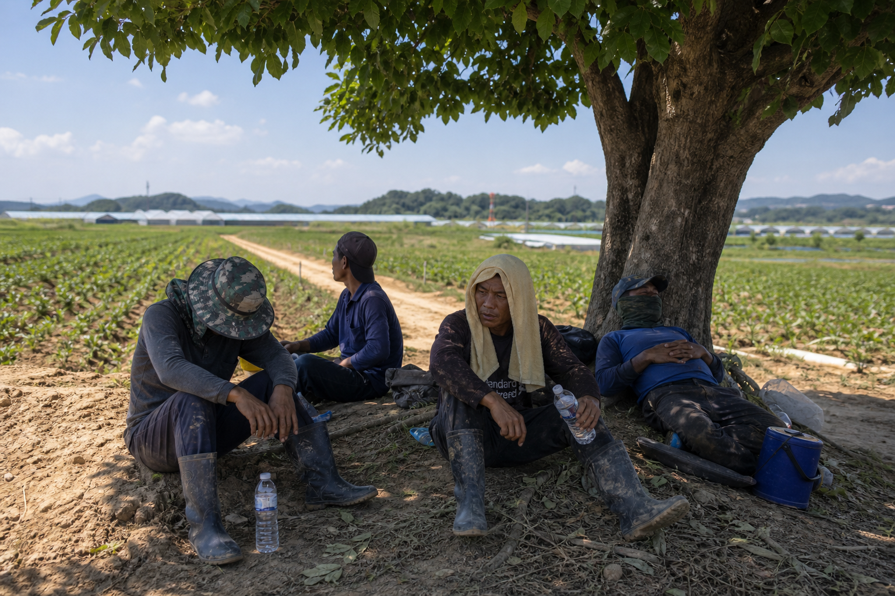
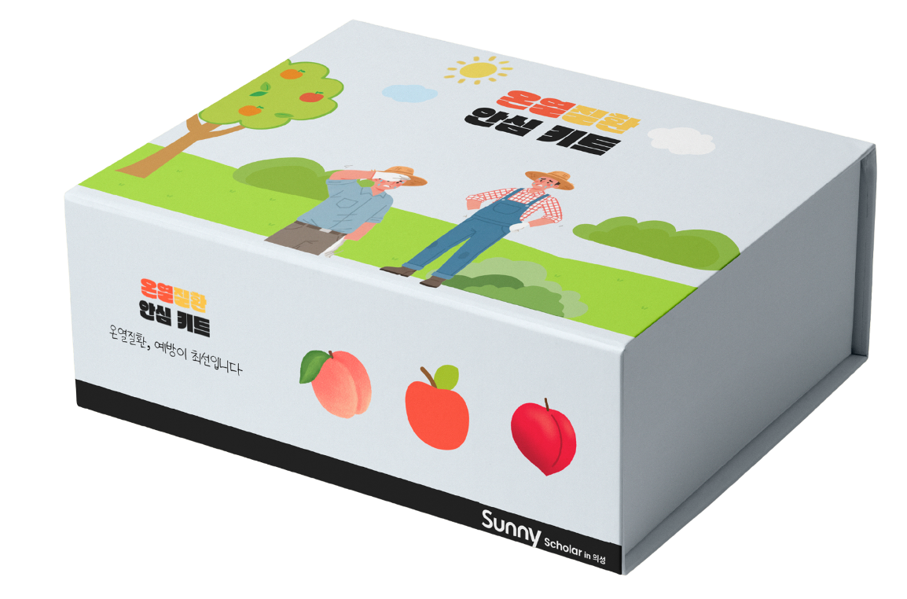
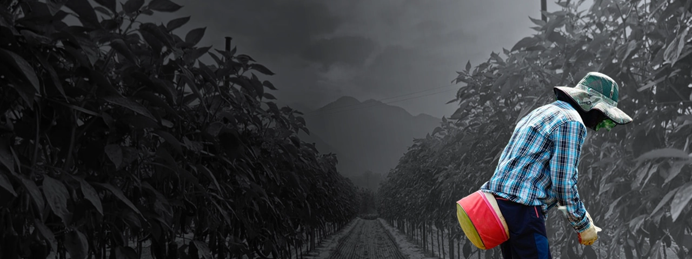
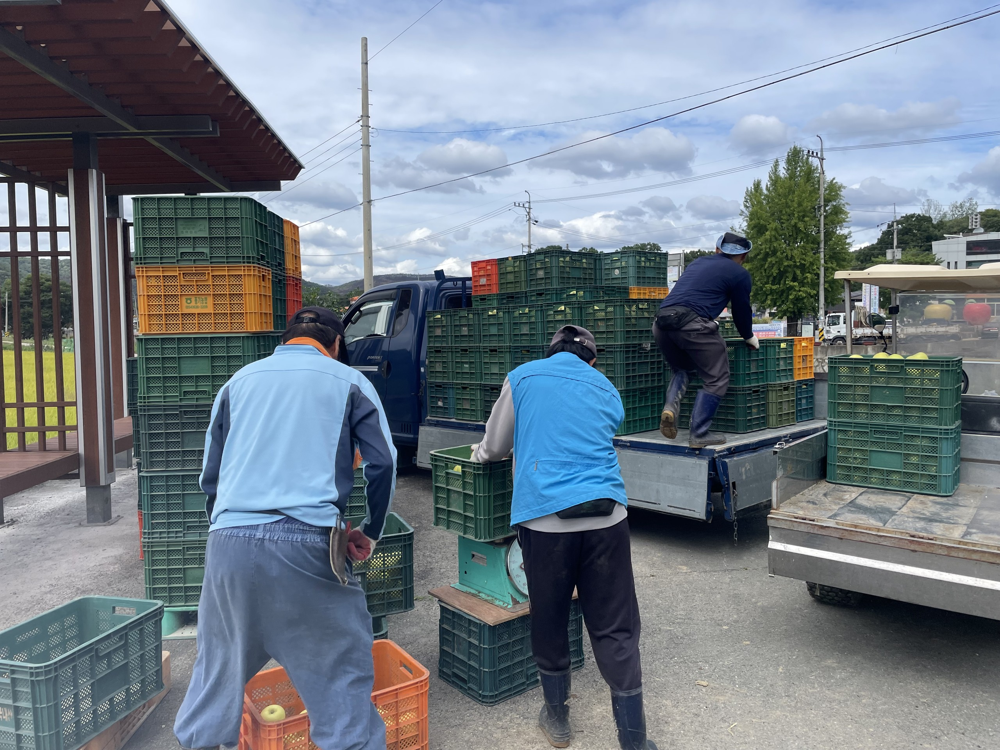
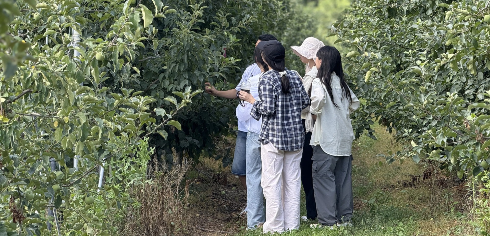
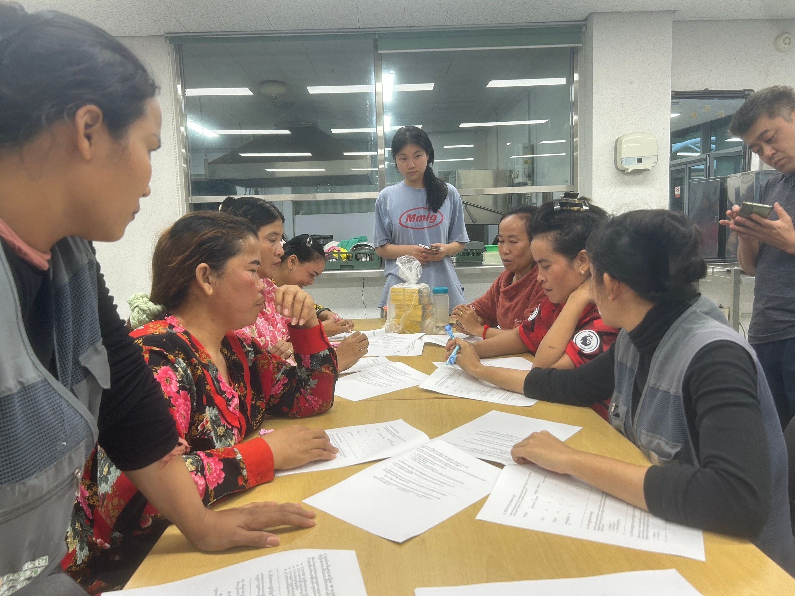
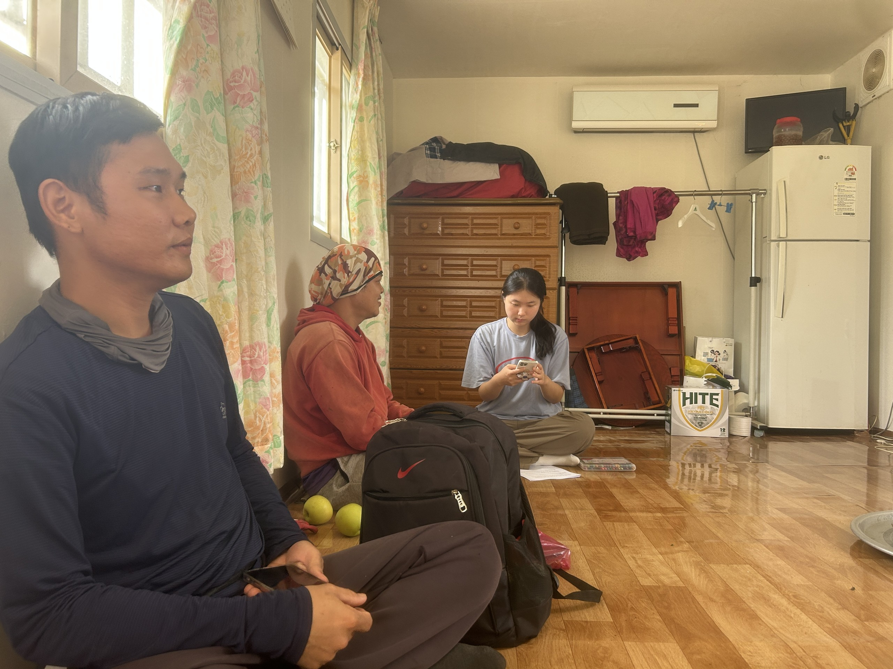

농촌 이주노동자의 온열질환은 죽음에 이르러서야 짧게 기사가 된다. 그 전에 막을 수 있도록 — 현장에 바로 쥐여줄 수 있는 안심키트.
부검에서도 작업 환경·노동 강도·폭염 노출이 사인에 충분히 반영되지 않아, 농촌 이주노동자의 온열질환은 통계에 잡히지 않는다. 그래서 헷사과는 의성 일대 현장에서 이주노동자 31명과 관계자 15명을 직접 만났다. 그중 13명이 온열질환을 겪고 있었다.
장시간 일하던 그는 열성 쇼크로 쓰러졌다. 응급실로 옮겨졌지만 언어 기능에 심각한 후유증이 남았다. 그러나 이 사건은 정부의 온열질환 통계에 집계되지 않았다.
농업 분야 온열질환 예방 지침이 사실상 없고, 교육은 형식적이다.
미등록 신분 탓에 쉬겠다고 먼저 말하기 어렵다.
비닐하우스 내부는 외기보다 10~15도 높고, 습도 80% 이상.
증상을 인지하고 도움을 청하는 길이 언어에 막힌다.
제도를 하루아침에 바꿀 수 없다면, 지금 당장 몸을 지킬 수 있는 것부터. 기능성·접근성·직관성 세 기준으로 고른 보호물품을, 도착하자마자 고민 없이 입을 수 있게 하나로 묶었다.
말이 통하지 않아도, 그림과 색으로 전한다

* 소규모 파일럿(N=24). 일반화엔 한계가 있지만 방향은 분명했다.





"얼굴이 창백해지고 몸이 덜덜 떨렸어요. 냉수를 머리에 들이부으면서 버텼습니다. 쉬면 안 되니까요."
"머리는 너무 어지럽고 눈앞이 흐린데, 한국말을 잘 못하니까 증상을 설명할 수가 없었어요."
"카드를 받은 친구들이 서로 색깔을 보여주면서 '나 지금 노란색이야' 하더라고요. 말이 안 통해도 색깔로 통하니까."
"더워도 그냥 참고 일했어요. 쉬자고 먼저 말할 수 없거든요."
키트 보급, 지역 폭염 안전사업 연계, 다국어 안전정보 표준화 — 함께할 분을 찾습니다.